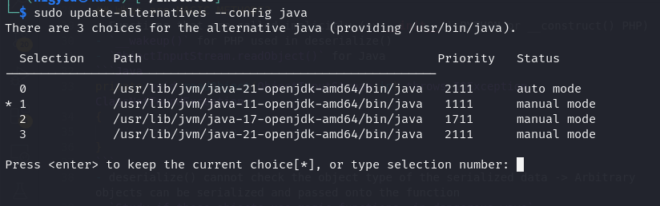

Objects -> serialization -> stream of bytes -> DB store -> deserialization -> Objects
Even private fields get serialized, if you don't mark it as transient
Dangerous! Because there is no way to check the type of the serialized object, any object can be passed into the deserialization function -> OBJECT INJECTION
In many cases, the attack happens even before the deserialization is finished.
// Java - binary serialization
// look for [ac ed](hex) or [rO0](base64) at the beginning of the data
java.io.Serializable -> any object that implements this interface can be serialized
readObject() -> source code indicator of deserialization
A series of object invocations or function calls that provide a chain leading to user controllable input ending up in a sink
Tools to identify gadget chains:
ysoserial (JAVA): for java deserialization. You select the library that you think the target application is using, then pass in the command you want to execute, and it gives a serialized object.
First select java 11 just like in image below

java -jar ysoserial-all.jar [payload] '[command]'
In the cookie I identified this:
This indicated towards the common collections gadgets
ysoserial uses:
RCE
DNS lookup through the URLDNS, the most univeral gadget chain for detection purposes! (supply a Collaborator address)
try to establish a TCP connection with an IP JRMPClient chain! If the firewall doesn't allow any outbound traffic. Supply a local IP and an external IP(that should be blocked). If the external IP causes a delay -> the deserialization happens on the target and it is vulnerable
phpggc - PHP equivalent
exercise solve: you see in the cookie you have a 'sig_hmac_sha1' field, so that means that you'll have to verify your payloads with signatures.
To generate these, you need the SECRET_KEY of the server: found at /cgi-bin/phpinfo.php in a commented out html
You get an error message saying Symfony v4, so try those gadget chains, one WILL WORK.